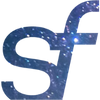
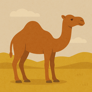
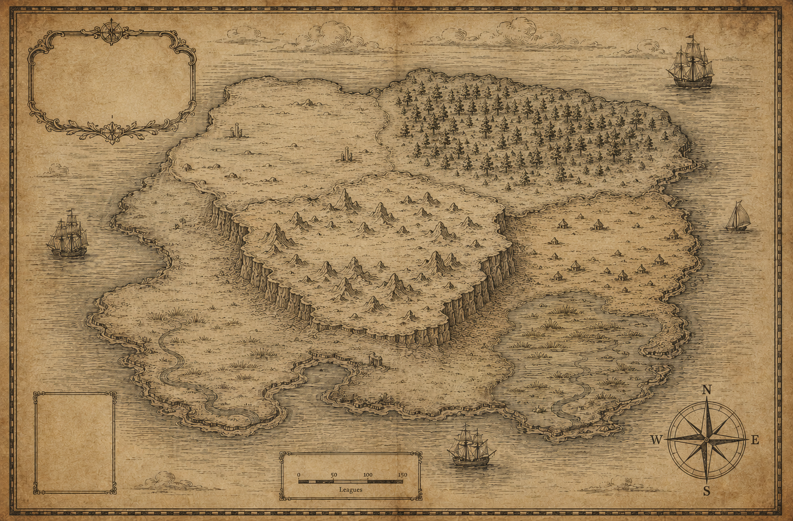

Sentient Futures ×
CaMLA curated map of organisations working to reduce suffering for animals and digital minds through AI research, advocacy, and field-building.

Every organisation listed works on preventing suffering to animals or digital minds through AI — whether through research, advocacy, building tools, funding, or field-building. Orgs working on animal welfare more broadly, or AI safety unrelated to sentience, sit just outside the scope. The bar is strict on purpose.
Curated by Sentient Futures and CaML. The list is a snapshot — emerging orgs are added as they meet the bar.
Know an org that should be here? Send us a note with the name, website, and a sentence on what they do.
Email a submission